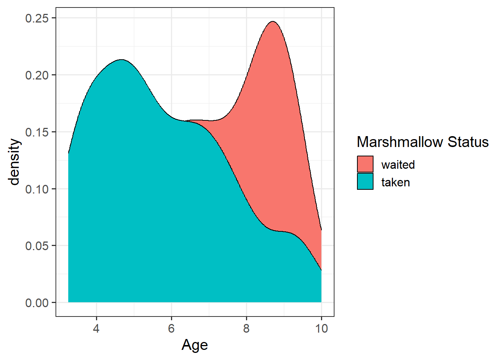
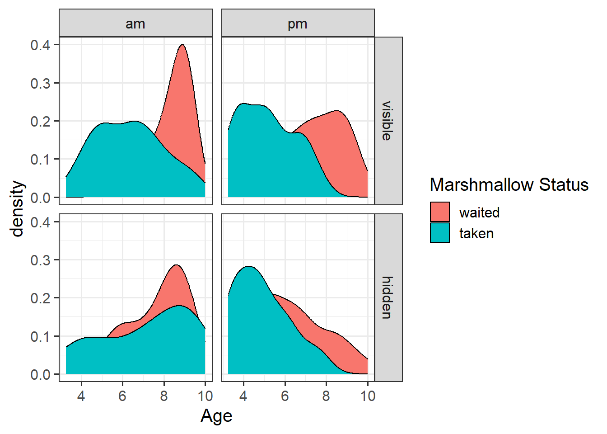
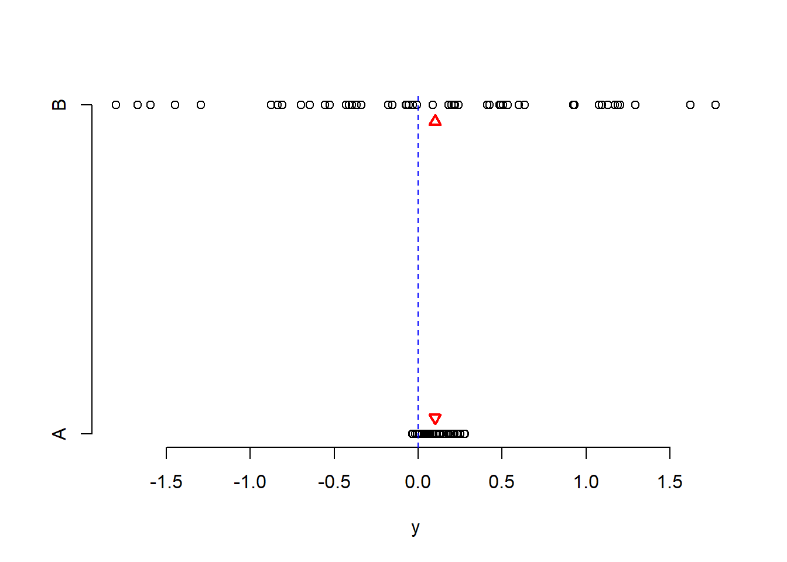

Remember to load all packages within a code chunk at the start of your RMarkdown file using library(). If you do not have a package and need to install, do so within the console using install.packages(" "). For further guidance on installing/updating packages, see Section C here.
For this lab, you will need to load the following package(s):
tidyverse
patchwork
kableExtra
psych
sjPlot
Lab Data
You can download the data required for this lab here or read it in via this link https://uoepsy.github.io/data/mallow2.csv
Section A: Write-Up
In this section of the lab you will be be presented with a research question, and tasked with writing up and presenting your analyses.
The aim in writing should be that a reader is able to more or less replicate your analyses without referring to your R code. This requires detailing all of the steps you took in conducting the analysis. The point of using RMarkdown is that you can pull your results directly from the code. If your analysis changes, so does your report!
Make sure that your final report doesn’t show any R functions or code. Remember you are interpreting and reporting your results in text, tables, or plots, targeting a generic reader who may use different software or may not know R at all. If you need a reminder on how to hide code, format tables, etc., make sure to review the rmd bootcamp.
Important - Write-Up Examples & Plagiarism
The example write-up sections included below are not perfect - they instead should give you a good example of what information you should include within each section, and how to structure this. For example, some information is missing (e.g., interpretation of descriptive statistics, what type of interaction is present), some information could be presented more clearly (e.g., variable names in tables, table/figure titles/captions, and rationales for choices), and writing could be more concise in places (e.g., discussion section is quite long).
Further, you must not copy any of the write-up included below for future reports - if you do, you will be committing plagiarism, and this type of academic misconduct is taken very seriously by the University. You can find out more here.
Study Overview
Research Aim
Explore the associations among the ability to delay gratification and age, visibility, and time of day.
Research Question
Does the probability of delaying gratification change as a function of age, marshmallow visibility, and time of day?
Marshmallows: Data Codebook
Description
The data used for this write-up exercise are simulated, drawing on the Stanford marshmallow experiment - a study on delayed gratification in children. The simulated data are loosely based on the findings of this work, and acted to expand upon the methods and results reported in the paper:
Mischel, W., Ebbesen, E. B., & Raskoff Zeiss, A. (1972). Cognitive and attentional mechanisms in delay of gratification. Journal of Personality and Social Psychology, 21(2), 204–218. https://doi.org/10.1037/h0032198
In the current study, a sample of 304 children, ranging in ages from 3 to 10 years old, took part. Each child was shown a marshmallow, and it was explained that they were about to be left alone for 10 minutes. They were told that they were welcome to eat the marshmallow while they were waiting, but if the marshmallow was still there after 10 minutes, they would be rewarded with two marshmallows.
For half of the children who took part, the marshmallow was visible for the entire 10 minutes (or until they ate it!). For the other half, the marshmallow was placed under a plastic cup.
The experiment took part at various times throughout the working day, and researchers were worried about children being more hungry at certain times of day, so they kept track of whether each child completed the task in the morning or the afternoon, so that they could control for this in their analyses.
For an example of the marshmallow experiment, watch the following video:
Data Dictionary
The data in mallow2.csv contain five attributes collected from a simulated sample of \(n=304\) hypothetical individuals, and includes:
Variable
Description
name
Participant name
agemonths
Age (in months)
timeofday
Time of day that the experiment took place ('am' = morning, 'pm' = afternoon)
visibility
Experimental condition - whether the marshmallow was 'visible' or 'hidden' for the 10 minutes
taken
Whether or not the participant took ('taken') the marshmallow within the 10 minutes or left it ('waited')
Preview
The first six rows of the data are:
name
agemonths
timeofday
visibility
taken
Lauren
60
pm
visible
taken
Taraleah
100
pm
visible
waited
Connor
109
pm
visible
waited
Siengthong
61
pm
hidden
waited
Naseem
90
pm
hidden
waited
Martin
636
am
hidden
taken
Setup
Setup
Create a new RMarkdown file
Load the required package(s)
Read the mallow2 dataset into R, assigning it to an object named marshmallow
Try to answer the research question above without referring to the provided analysis code below, and then check how your script matches up - is there anything you missed or done differently? If so, discuss the differences with a tutor - there are lots of ways to code to the same solution!
Provided Analysis Code
######Step 1 ######## TASKS: read in the data, then check, clean, describe, and visualise it.############## CHECK ####################check coding of variables - are they coded as they should be?str(marshmallow)
# A tibble: 6 × 5
name agemonths timeofday visibility taken
<chr> <dbl> <chr> <chr> <chr>
1 Lauren 60 pm visible taken
2 Taraleah 100 pm visible waited
3 Connor 109 pm visible waited
4 Siengthong 61 pm hidden waited
5 Naseem 90 pm hidden waited
6 Martin 636 am hidden taken
#time of day, visibility, and taken all currently coded as character variables when should be factors, need to fix this.# age also in months - likely more useful to have in years given age included up to 10 years old.### check range of values, NAs, etc. for each variable # age - should range 36-120 monthsdescribe(marshmallow$agemonths)
vars n mean sd median trimmed mad min max range skew kurtosis se
X1 1 304 81.47 43.06 79 79.18 29.65 36 636 600 8.24 96.98 2.47
# ISSUE - we have values WAY above what should be included from the sample#visibility - should either be hidden or visible, with same number of ppts in each conditiontable(marshmallow$visibility)
hidden visible
152 152
# All good#time of day - should either be am or pmtable(marshmallow$timeofday)
5 pm am noon pm
1 145 1 157
# ISSUE - we have one mis-coded as “5 pm”, which I’m guessing should just be “pm”. And we have one at “noon”. There’s no way of knowing whether that was morning or afternoon, so safest option is to just remove#taken - shold either be taken or waitedtable(marshmallow$taken)
taken waited
136 168
# All good############## CLEAN #################### We can do all cleaning in one long command.# First create age (in years) variable# Second fix time of day - make factor and specify correct levels# Third make visibility a factor and specify levels# Fourth make taken a factor and specify levels# Lastly we want to remove anyone over 120 months (i.e., 10 years) and those with NA values for time of day (i.e., the value of noon)marshmallow<-marshmallow%>%mutate( age =agemonths/12, timeofday =factor(timeofday, levels=c("am","pm","5 pm"), # possible levels labels =c("am","pm","pm")), # make the levels these visibility =factor(visibility, levels=c("visible","hidden")), taken =factor(taken, levels=c("waited","taken")))%>%filter(agemonths<=120, !is.na(timeofday))#check cleaning has worked:describe(marshmallow$agemonths)#min over 36, and max 120 - all good
vars n mean sd median trimmed mad min max range skew kurtosis se
X1 1 301 78.73 22.44 79 79.07 28.17 39 120 81 -0.06 -1.19 1.29
describe(marshmallow$age)#min over 3 yo, and max 10 yo - all good
vars n mean sd median trimmed mad min max range skew kurtosis se
X1 1 301 6.56 1.87 6.58 6.59 2.35 3.25 10 6.75 -0.06 -1.19 0.11
table(marshmallow$timeofday)#now only am or pm as should be
############## VISUALISE ####################bar plotmallow_plt1<-ggplot(data =marshmallow, aes(x =as_factor(taken), fill =as_factor(taken)))+geom_bar()+labs(x ="Taken Marshmallow (0 = No, 1 = Yes)", fill ="Marshmallow Status", y ="Frequency")mallow_plt1
#density plotmallow_plt2<-ggplot(data =marshmallow, aes(x =age, fill =as_factor(taken)))+geom_density()+labs(x ="Age", fill ="Marshmallow Status")mallow_plt2

#density plot with facetsmallow_plt3<-ggplot(data =marshmallow, aes(x =age, fill =as_factor(taken)))+geom_density()+facet_grid(visibility~timeofday)+labs(x ="Age", fill ="Marshmallow Status")mallow_plt3

######Step 2 ######## TASKS: run your model(s) of interest to answer your research question, and make sure that the data meet the assumptions of your chosen test############## BUILD MODEL & EXAMINE OUTPUT ###################mm1<-glm(taken~timeofday+age+visibility, data =marshmallow, family =binomial)summary(mm1)
Call:
glm(formula = taken ~ timeofday + age + visibility, family = binomial,
data = marshmallow)
Coefficients:
Estimate Std. Error z value Pr(>|z|)
(Intercept) 4.40584 0.68525 6.430 1.28e-10 ***
timeofdaypm -0.48621 0.29202 -1.665 0.0959 .
age -0.58448 0.08622 -6.779 1.21e-11 ***
visibilityhidden -1.19939 0.27296 -4.394 1.11e-05 ***
---
Signif. codes: 0 '***' 0.001 '**' 0.01 '*' 0.05 '.' 0.1 ' ' 1
(Dispersion parameter for binomial family taken to be 1)
Null deviance: 413.65 on 300 degrees of freedom
Residual deviance: 338.63 on 297 degrees of freedom
AIC: 346.63
Number of Fisher Scoring iterations: 4
############## MODEL FIT ####################compare to null - conduct model comparison#fit nullmm0<-glm(taken~1, family ="binomial", data =marshmallow)#compare models - models are nestedanova(mm0, mm1, test ="Chisq")
Analysis of Deviance Table
Model 1: taken ~ 1
Model 2: taken ~ timeofday + age + visibility
Resid. Df Resid. Dev Df Deviance Pr(>Chi)
1 300 413.65
2 297 338.63 3 75.021 3.586e-16 ***
---
Signif. codes: 0 '***' 0.001 '**' 0.01 '*' 0.05 '.' 0.1 ' ' 1
############## PLOT / TABLE MODEL RESULTS ####################results in formatted tabletab_model(mm1, dv.labels ="Marshmallow Taken", pred.labels =c("Intercept", "Time of Day - PM", "Age (in years)", "Visibility - Hidden"), title ="Regression Table for Marshmallow Model")
Regression Table for Marshmallow Model
Marshmallow Taken
Predictors
Odds Ratios
CI
p
Intercept
81.93
22.47 – 332.30
<0.001
Time of Day - PM
0.61
0.34 – 1.08
0.096
Age (in years)
0.56
0.47 – 0.66
<0.001
Visibility - Hidden
0.30
0.17 – 0.51
<0.001
Observations
301
R2 Tjur
0.233
The 3-Act Structure: Analysis Strategy, Results, & Discussion
We need to present our report in three clear sections - think of your sections like the 3 key parts of a play or story - we need to (1) provide some background and scene setting for the reader, (2) present our results in the context of the research question, and (3) present a resolution to our story - relate our findings back to the question we were asked and provide our answer.
Act I: Analysis Strategy
Question 1
Attempt to draft a discussion section based on the above research question and analysis provided.
Analysis Strategy - What to Include
Your analysis strategy will contain a number of different elements detailing plans and changes to your plan. Remember, your analysis strategy should not contain any results. You may wish to include the following sections:
Very brief data and design description:
Give the reader some background on the context of your write-up. For example, you may wish to describe the data source, data collection strategy, study design, number of observational units.
Specify the variables of interest in relation to the research question, including their unit of measurement, the allowed range (for Likert scales), and how they are scored. If you have categorical data, you will need to specify the levels and coding of your variables, and what was specified as your reference level and the justification for this choice.
Data management:
Describe any data cleaning and/or recoding.
Are there any observations that have been excluded based on pre-defined criteria? How/why, and how many?
Describe any transformations performed to aid your interpretation (i.e., mean centering, standardisation, etc.)
Model specification:
Clearly state your hypotheses and specify your chosen significance level.
What type of statistical analysis do you plan to use to answer the research question? (e.g., simple linear regression, multiple linear regression, binary logistic regression, etc.)
In some cases, you may wish to include some visualisations and descriptive tables to motivate your model specification.
Specify the model(s) to be fitted to answer your given research question and analysis structure. Clearly specify the response and explanatory variables included in your model(s). This includes specifying the type of coding scheme applied if using categorical data.
Specify the assumption and diagnostic checks that you will conduct. Specify what plots you will use, and how you will evaluate these.
As noted and encouraged throughout the course, one of the main benefits of using RMarkdown is the ability to include inline R code in your document. Try to incorporate this in your write up so you can automatically pull the specified values from your code. If you need a reminder on how to do this, see Lesson 4 of the Rmd Bootcamp.
Example Write-Up of Analysis Strategy Section
The mallow2 dataset contained information on 304 participants who took part in a study concerning delayed gratification - where children were presented with a single marshmallow, but were told that if they could leave it for 10 minutes, they would be rewarded with two marshmallows (scored dichotomously as taken or waited). The children participated in either the morning (am) or afternoon (pm), and the marshmallow was either visible or hidden for the 10 minute duration of the experiment. The age of each child was also recorded. All participant data was complete (no missing values), but two participants were excluded due to their age being outside of the range included in the study, and so the final sample size was 302.
To investigate whether the probability of taking the marshmallow changed as a function of time of day (am/pm), age, and marshmallow visibility (visible/hidden), a binary logistic regression model was used. Effects were considered statistically significant at \(\alpha = .05\). The following model specification was used:
\[
\begin{aligned}
\text{where}~{p}~ &=~ \text{probability of taking the marshmallow}
\end{aligned}
\]
To address the research question of whether the probability of taking the marshmallow changed as a function of time of day, age, and marshmallow visibility, this formally corresponded to:
To assess model fit, we visually assessed the standardized deviance residuals and Cook’s Distance. We expected the former to identify outliers (or extreme values), and we expected residuals to fall within the range of -2 to 2. We used the latter to check for influential observations, and visually assessed if any of our 302 observations had a Cook’s distance > 0.5 (moderately influential) or > 1 (highly influential).
Act II: Results
Question 2
Attempt to draft a results section based on your detailed analysis strategy and the analysis provided.
Results - What To Include
The results section should follow from your analysis strategy. This is where you would present the evidence and results that will be used to answer the research questions and can support your conclusions. Make sure that you address all aspects of the approach you outlined in the analysis strategy (including the evaluation of assumptions and diagnostics).
In this section, it is useful to include tables and plots to clearly present your findings to your reader. It is important, however, to carefully select what is the key information that should be presented. You don’t want to overload the reader with unnecessary or duplicate information, and you also want to save space in case there is a page limit. Make use of figures with multiple panels where you can.
As a broad guideline, you want to start with the results of any exploratory data analysis, presenting tables of summary statistics and exploratory plots. You may also want to visualise associations between/among variables and report covariances or correlations. Then, you should move on to the results from your model.
It appeared that when the marshmallow was visible, a greater percentage of children took it; and the percentage of children who engaged in delayed gratification was higher in the morning sessions (see Figure 1).
Figure 1: Association between Delayed Gratification, Age, Visibility of Marshmallow, and Time of Day
A binary logistic regression model was fitted to determine whether the probability of taking the marshmallow changed as a function of time of day, age, and marshmallow visibility.
Our model did not raise any concerns regarding fit. Though there appeared to be a few residuals with a value slightly larger than 2 in absolute value (see left-hand plot in Figure 2), they were not influential points (see right-hand plot in Figure 2), since none of our observations had a Cook’s distance value > 0.5.
Figure 2: Model Fit Plots
Age and visibility were significant predictors of delayed gratification (see Table 2). For every year increase in age, the odds of taking the marshmallow decreased by a factor of 0.56 (\(95\%\, CI\, [0.47, 0.66])\). When the marshmallow was hidden (as opposed to visible), the odds of taking the marshmallow decreased by a factor of 0.3 (\(95\%\, CI\, [0.17, 0.51])\). Thus, we rejected the null hypothesis.
Table 2: Regression Table for Marshmallow Model
Marshmallow Taken
Predictors
Odds Ratios
CI
p
Intercept
81.93
22.47 – 332.30
<0.001
Time of Day - PM
0.61
0.34 – 1.08
0.096
Age (in years)
0.56
0.47 – 0.66
<0.001
Visibility - Hidden
0.30
0.17 – 0.51
<0.001
Observations
301
R2 Tjur
0.233
Act III: Discussion
Question 3
Attempt to draft a discussion section based on your results and the analysis provided.
Discussion - What To Include
In the discussion section, you should summarise the key findings from the results section and provide the reader with a few take-home sentences drawing the analysis together and relating it back to the original question.
The discussion should be relatively brief, and should not include any statistical analysis - instead think of the discussion as a conclusion, providing an answer to the research question(s).
Example Write-Up of Discussion Section
The probability of children delaying gratification did change as a function of age and marshmallow visibility (but not time of day). In summary, older age and conditions where the marshmallow was hidden appeared to be associated with greater odds of successfully delaying gratification.
Section B: Weeks 6-9 Recap
In the second part of the lab, there is no new content - the purpose of the recap section is for you to revisit and revise the concepts you have learned over the last 4 weeks.
Before you expand each of the boxes below, think about how comfortable you feel with each concept.
Errors and Power in Hypothesis Testing
When testing a hypothesis, we reach one of the following two decisions:
failing to reject \(H_0\) as the evidence against it is not sufficient
rejecting \(H_0\) as we have enough evidence against it
However, irrespective of our decision, the underlying truth can either be that
\(H_0\) is actually false
\(H_0\) is actually true
Hence, we have four possible outcomes following a hypothesis test:
We failed to reject \(H_0\) when it was true, meaning we made a Correct decision
We rejected \(H_0\) when it was false, meaning we made a Correct decision
We rejected \(H_0\) when it was true, committing a Type I error
We failed to reject \(H_0\) when it was false, committing a Type II error
In the first two cases we are correct, while in the latter two we committed an error.
When we reject the null hypothesis, we never know if we were correct or committed a Type I error, however we can control the chance of us committing a Type I error.
Similarly, when we fail to reject the null hypothesis, we never know if we are correct or we committed a Type II error, but we can also control the chance of us committing a Type II error.
The following table summarises the two types of errors that we can commit:
A Type I error corresponds to a false discovery, while a type II error corresponds to a failed discovery/missed opportunity.
Each error has a corresponding probability:
The probability of incorrectly rejecting a true null hypothesis is \(\alpha = P(\text{Type I error})\)
The probability of incorrectly not rejecting a false null hypothesis is \(\beta = P(\text{Type II error})\)
A related quantity is Power, which is defined as the probability of correctly rejecting a false null hypothesis.
Power
Power is the probability of rejecting a false null hypothesis. That is, it is the probability that we will find an effect when it is in fact present. \[
\text{Power} = 1 - P(\text{Type II error}) = 1 - \beta
\]
Note
See S2 Week 6 Lecture, and S2 Week 6 Lab for further details, examples, and to revise these concepts further.
Factors Affecting Power
In practice, it is ideal for studies to have high power while using a relatively small significance level such as .05 or .01. For a fixed \(\alpha\), the power increases in the same cases that P(Type II error) decreases, namely as the sample size increases and as the parameter value moves farther into the H values away from the H0 value.
The power of a test is affected by the following factors:
sample size. Power increases as the sample size increases.
effect size. Power increases as the parameter value moves farther into the \(H_1\) values away from the \(H_0\) value.
significance level. Power increases as the significance level increases.
Out of these, increasing the significance level \(\alpha\) is never an acceptable way to increase power as it leads to more Type I errors, i.e. a higher chance of incorrectly rejecting a true null hypothesis (false discoveries).
Note
See S2 Week 6 Lecture, and S2 Week 6 Lab for further details, examples, and to revise these concepts further.
Effect Size
Effect size refers to the “detectability” of your alternative hypothesis. In simple terms, it compares the distance between the alternative and the null hypothesis to the variability in your data.
For simplicity consider comparing a mean: \(H_0: \mu = 0\) vs \(H_1: \mu \neq 0\). If the sample mean were really 0.1 and the null hypothesis is 0, the distance is 0.1 - 0 = 0.1.
Now, a distance of 0.1 has a different weight in the following two scenarios.
Scenario 1. Data vary between -1 and 1.
Scenario 2. Data vary between -1000 and 1000.
Clearly, in Scenario 1 a distance of of 0.1 is a big difference. Conversely, in Scenario 2 a distance of 0.1 is not an interesting difference, it’s negligible compared to the magnitude of the data.

Note
See S2 Week 6 Lecture, and S2 Week 6 Lab for further details, examples, and to revise these concepts further.
The pwr Package
You will perform power analysis using the pwr package. To install it, run install.packages("pwr") in your console, then run library(pwr) in your RMarkdown file.
The following functions are available.
Function
Description
pwr.2p.test
Two proportions (equal n)
pwr.2p2n.test
Two proportions (unequal n)
pwr.anova.test
Balanced one-way ANOVA
pwr.chisq.test
Chi-square test
pwr.f2.test
General linear model
pwr.p.test
Proportion (one sample)
pwr.r.test
Correlation
pwr.t.test
t-tests (one sample, two samples, paired)
pwr.t2n.test
t-test (two samples with unequal n)
For each function, you can specify three of four arguments (sample size, alpha, effect size, power) and the fourth argument will be calculated for you.
Of the four quantities, effect size is often the most difficult to specify. Calculating effect size typically requires some experience with the measures involved and knowledge of past research.
Typically, specifying effect size requires you to read published literature or past papers on your research topic, to see what effect sizes were found and what significant results were reported. Other times, this might come from previous collected data or subject-knowledge from your colleagues.
But what can you do if you have no clue what effect size to expect in a given study? Cohen (1988) provided guidelines for what a small, medium, or large effect typically is in the behavioral sciences.
Type of test
Small
Medium
Large
t-test
0.20
0.50
0.80
ANOVA
0.10
0.25
0.40
Linear regression
0.02
0.15
0.35
Note
See S2 Week 6 Lecture, and S2 Week 6 Lab for further details, examples, and to revise these concepts further.
Power for t-tests
We compare the mean of a response variable between two groups using a t-test. For example, if you are comparing the mean response between two groups, say treatment and control, the null and alternative hypotheses are: \[
H_0 : \mu_t - \mu_c = 0
\]
\[
H_1 : \mu_t - \mu_c \neq 0
\]
The effect size in this case is Cohen’s \(D\): \[
D = \frac{(\bar x_t - \bar x_c) - 0}{s_p}
\] where
\(\bar x_t\) and \(\bar x_c\) are the sample means in the treatment and control groups, respectively
\(s_p\) is the “pooled” standard deviation
Cohen’s \(D\) measures the distance between (a) the observed difference in means from (b) the hypothesised value 0, and compares this to the variability in the data.
In R we use the function
pwr.t.test(n = , d = , sig.level = , power = , type = , alternative =)
where
n = the sample size
d = the effect size
sig.level = the significance level \(\alpha\) (the default is 0.05)
power = the power level.
type = the type of t-test to perform: either a two-sample t-test (“two.sample”), a one-sample t-test (“one.sample”), or a dependent sample t-test (“paired”). A two-sample test is the default.
alternative = whether the alternative hypothesis is two-sided (“two.sided”) or one-sided (“less” or “greater”). A two-sided test is the default.
Note
See S2 Week 6 Lecture, and S2 Week 6 Lab for further details, examples, and to revise these concepts further.
Power for Linear Regression
In linear regression, the relevant function in R is:
This case is when you wish to find the minimum sample size required to answer the following test of hypothesis:
\[
\begin{aligned}
H_0 &: \beta_{k+1} = \beta_{k+2} = \dots = \beta_K = 0 \\
H_1 &: \text{At least one of the above } \beta \neq 0 \\
\end{aligned}
\]
You need to use the R-squared from the larger model \(R^2_M\) and the R-squared from the smaller model \(R^2_m\). The appropriate formula for the effect size is:
\[
f^2 = \frac{R^2_{M} - R^2_{m}}{1 - R^2_M}
\]
Here, the numerator degrees of freedom are the extra predictors: \(\texttt u = K - k\).
The denominator degrees of freedom returned by the function will give you (here you use \(K\) the number of all predictors in the larger model):
\[
\text v = n - (K + 1) = n - K - 1
\]
From which you can infer the sample size as
\[
n = \text v + K + 1
\]
Note
See S2 Week 6 Lecture, and S2 Week 6 Lab for further details, examples, and to revise these concepts further.
Probability, Odds, Log-Odds
The probability\(p\) ranges from 0 to 1.
The odds\(\frac{p}{1-p}\) ranges from 0 to \(\infty\).
The log-odds\(\log \left( \frac{p}{1-p} \right)\) ranges from \(-\infty\) to \(\infty\).
Note
In the labs, we used “log” to denote log-odds. In the lectures, you will have seen this denoted as “ln”.
Probability, Odds and Log-odds
In order to understand the connections among these concepts, lets work with an example where the probability of an event occurring is 0.2:
See S2 Week 7 Lecture, and S2 Week 7 Lab, and S2 Week 8 Lab for further details, examples, and to revise these concepts further.
Binary Logistic Regression
When a response (y) is binary coded (e.g., 0/1; failure/success; no/yes; fail/pass; unemployed/employed) we must use logistic regression. The predictors can either be continuous or categorical.
See S2 Week 7 Lecture, and S2 Week 7 Lab, and S2 Week 8 Lab for further details, examples, and to revise these concepts further.
Interpretation of Coefficients
To interpret the fitted coefficients, we first exponentiate the model: \[
\begin{aligned}
\log \left( \frac{p_x}{1-p_x} \right) &= \beta_0 + \beta_1 x \\
e^{ \log \left( \frac{p_x}{1-p_x} \right) } &= e^{\beta_0 + \beta_1 x } \\
\frac{p_x}{1-p_x} &= e^{\beta_0} \ e^{\beta_1 x}
\end{aligned}
\]
and recall that the probability of success divided by the probability of failure is the odds of success. \[
\frac{p_x}{1-p_x} = \text{odds}
\]
Let’s apply this to an example where we are trying to determine whether the probability of having senility symptoms change as a function of Wechsler Adult Intelligence Scale (WAIS) score, where we fit the following model:
OR < 1 : decreased odds (\(0.5 \times odds = odds \text{ are halved}\))
OR > 1 : increased odds (\(2 \times odds = odds \text{ are doubled}\))
So in our example, we could interpret by saying that for a one-unit increase in WAIS score the odds of senility symptoms increase by a factor of \(e^{\beta_1}\).
OR are not “exp(b) times more likely”
Often you will hear people interpreting odds ratios as “\(y\) is exp(b) times as likely”.
Although it is true that increased odds is an increased likelihood of \(y\) occurring, double the odds does not mean you will see twice as many occurrences of \(y\) - i.e. it does not translate to doubling the probability.
Here’s a little more step-by-step explanation to explain:
coefficient
b
exp(b)
(Intercept)
3.76
43.13
age
-0.62
0.54
For children aged 2 years old the log-odds of them taking the marshmallow are 3.76 + -0.62*2 = 2.52.
Translating this to odds, we exponentiate it, so the odds of them taking the marshmallow are \(e^{(3.76 + -0.62*2)} = e^{2.52} = 12.43\).
(This is the same1 as \(e^{3.76} \times e^{-0.62*2}\))
These odds of 12.43 means that (rounded to nearest whole number) if we take 13 children aged 2 years, we would expect 12 of them to take the marshmallow, and 1 to not take it.
If we consider how the odds change for every extra year of age (i.e. for 3 year old as opposed to 2 year old children):
the log-odds of taking the marshmallow decrease by -0.62.
the odds of taking the marshmallow are multiplied by 0.54.
so for a 3 year old child, the odds are \(12.43 \times 0.54 = 6.69\).
(And we can also calculate this as \(e^{2.52 + -0.62}\))
So we have gone from odds of 12.4-to-1 for 2 year olds, and 6.7-to-1 for 3 year olds. The odds have been multiplied by 0.54.
But those odds, when converted to probability, these are 0.93 and 0.87. So \(0.54 \times odds\) is not \(0.54 \times probability\).
the intercept (but not slopes) can be converted to a probability
Because our intercept is at a single point (it’s not an association), we can actually convert this to a probability. Remember that \(odds = \frac{p}{1-p}\), which means that \(p = \frac{odds}{1 + odds}\). So the probability of taking the marshmallow for a child aged zero is \(\frac{43.13}{1 + 43.13} = 0.98\).
Unfortunately, we can’t do the same for any slope coefficients. This is because while the intercept is “odds”, the slopes are “odds ratios” (i.e. changes in odds), and changes in odds are different at different levels of probability.
Consider how when we multiply odds by 2, the increase in probability is not constant:
Odds
Probability
0.5
\(\frac{1}{1+0.5} = 0.33\)
1
\(\frac{1}{1+1} = 0.5\)
2
\(\frac{2}{1+2} = 0.66\)
4
\(\frac{4}{1+4} = 0.8\)
8
\(\frac{8}{1+8} = 0.88\)
In R:
To translate log-odds to odds in order to aid interpretation, we can exponentiate (i.e., by using exp()) the coefficients from your model using R via the following command:
We can also use R to extract predicted probabilities for us from our models.
Calculate the predicted log-odds (probabilities on the logit scale): predict(model, type="link")
Calculate the predicted probabilities: predict(model, type="response")
Note
See S2 Week 7 Lecture, and S2 Week 7 Lab, and S2 Week 8 Lab for further details, examples, and to revise these concepts further.
Generalized Linear Models
Generalized linear models can be fitted in R using the glm function, which is similar to the lm function for fitting linear models. However, we also need to specify the family (i.e., link) function. There are three key components to consider:
Random component / probability distribution - The distribution of the response/outcome variable. Can be from any family of distributions as listed below.
Systematic component / linear predictor - the explanatory/predictor variable(s) (can be continuous or discrete).
Link function - specifies the link between a random and systematic components.
glm(y ~ x1 + x2, data = data, family =<INSERT_FAMILY>)
The family argument takes (the name of) a family function which specifies the link function and variance function (as well as a few other arguments not entirely relevant to the purpose of this course).
The exponential family functions available in R are:
binomial (link = “logit”)
gaussian (link = “identity”)
poisson (link = “log”)
Gamma (link = “inverse”)
inverse.gaussian (link = “1/mu2”)
See ?glm for other modeling options. See ?family for other allowable link functions for each family.
Note
See S2 Week 7 Lecture, and S2 Week 7 Lab, and S2 Week 8 Lab for further details, examples, and to revise these concepts further.
Drop-in-Deviance Test to Compare Mested Models
When moving from linear regression to more advanced and flexible models, testing of goodness of fit is more often done by comparing a model of interest to a simpler one.
The only caveat is that the two models need to be nested, i.e. one model needs to be a simplification of the other, and all predictors of one model needs to be within the other.
We want to compare the model we previously fitted against a model where all slopes are 0, i.e. a baseline model:
mdl_reduced <-glm(DV ~1, family ="binomial", data = dataset)mdl_main <-glm(DV ~ IV1 + IV2 ... + IV4, family ="binomial", data = dataset)anova(mdl_red, mdl_main, test ='Chisq')
In the output we can see the residual deviance of each model. Remember the deviance is the equivalent of residual sum of squares in linear regression.
Note
See S2 Week 7 Lecture, and S2 Week 7 Lab, and S2 Week 8 Lab for further details, examples, and to revise these concepts further.
Akaike and Bayesian Information Criteria
Deviance measures lack of fit, and it can be reduced to zero by making the model more and more complex, effectively estimating the value at each single data point. However, this involves adding more and more predictors, which makes the model more complex (and less interpretable).
Typically, the simpler model should be preferred when it can still explain the data almost as well. This is why information criteria were devised, exactly to account for both the model misfit but also its complexity.
\[
\text{Information Criterion} = \text{Deviance} + \text{Penalty for model complexity}
\]
Depending on the chosen penalty, you get different criteria. Two common ones are the Akaike and Bayesian Information Criteria, AIC and BIC respectively:
\[
\begin{aligned}
\text{AIC} &= \text{Deviance} + 2 p \\
\text{BIC} &= \text{Deviance} + p \log(n)
\end{aligned}
\]
where \(n\) is the sample size and \(p\) is the number of regression coefficients in the model. Models that produce smaller values of these fit criteria should be preferred.
AIC and BIC differ in their degrees of penalization for number of regression coefficients, with BIC usually favouring models with fewer terms.
Note
See S2 Week 7 Lecture, and S2 Week 7 Lab, and S2 Week 8 Lab for further details, examples, and to revise these concepts further.